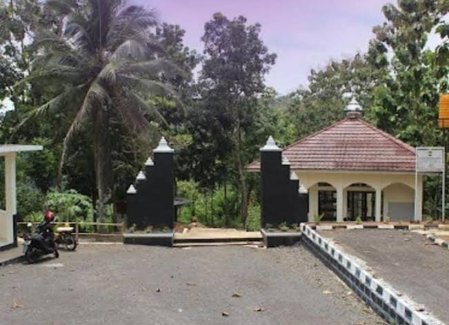
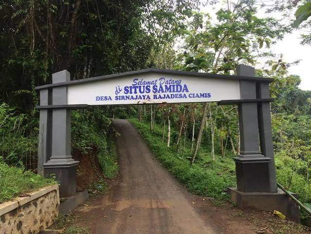
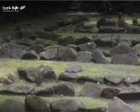
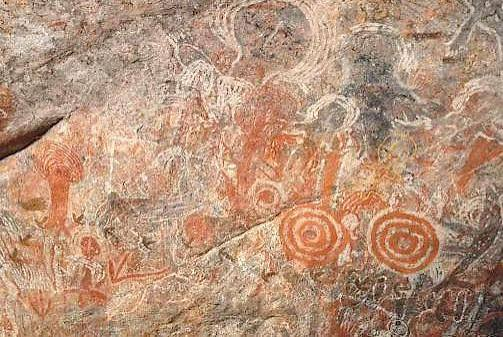
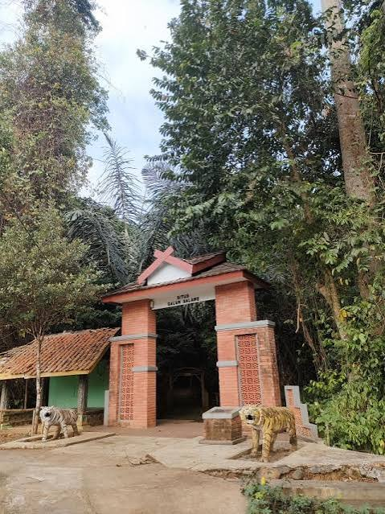
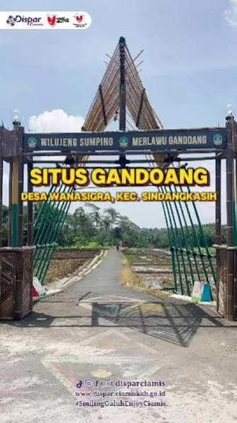

Sejarah Tatar Galuh

Situs Bojong Galuh Karangkamulyan (Situs Ciung Wanara)
Situs Bojong Galuh Karangkamulyan (Situs Ciung Wanara) adalah objek wisata sejarah, budaya, dan arkeologi yang terletak di Desa Karangkamulyan, Kecamatan Cijeungjing, Kabupaten Ciamis, Jawa Barat.

Situs Astana Gede Kawali
Merupakan pusat pemerintahan Kerajaan Galuh pada masa kepemimpinan Sunda purba. Di kawasan cagar budaya ini terdapat Prasasti Kawali (I sampai VI), batu pamuruyan, serta petirtaan Kolam Cikawali.

Situs Jambansari
Situs Jambansari adalah salah satu cagar budaya dan tempat ziarah penting yang terletak di Kabupaten Ciamis, Jawa Barat

Situs Gunung Susuru
Kompleks situs peninggalan masa Kerajaan Galuh yang dikelilingi oleh lanskap alam dan struktur bebatuan masa lalu.

Situs Batu Panjang
Kawasan perkampungan tradisional yang masih memegang teguh adat istiadat leluhur secara turun-temurun, lengkap dengan hutan keramat (Leuweung Gede) yang dilindungi aturan adat ketat.

Kampung Adat Kuta
Kawasan perkampungan tradisional yang masih memegang teguh adat istiadat leluhur secara turun-temurun, lengkap dengan hutan keramat (Leuweung Gede) yang dilindungi aturan adat ketat.

Situs Samida
Kawasan hutan larangan / konservasi masa lalu yang merujuk pada catatan buatan peninggalan Sri Baduga Maharaja(Prabu Siliwangi) pada tahun 1445M

Situs Geger emas
Kompleks kepurbakalaan bercorak Islam dengan pengaruh tradisi megalitik yang kuat. Tempat ini sering digunakan untuk tradisi budaya adat lokal seperti upacara Nyepuh.

Situs Piktograf Citapen (Batu Radang)
Situs prasejarah berupa goresan atau piktograf pada dinding tebing bukit yang berada dekat aliran Sungai Cijolang.

Situs Galuh Salawe
Kompleks situs arkeologi yang menyimpan peninggalan berupa menhir, punden berundak, prasasti, serta beberapa makam keramat.

Situs Gandoang Wanasigra
Situs di lembah Sungai Ciseel yang menyimpan tinggalan naskah kuno (naskah Gandoang dan naskah tembaga Wanasigra), struktur batu, serta makam leluhur.

Kompleks Pendopo Kabupaten & Eks Kantor Kewedanaan Ciamis
Bangunan pusat pemerintahan bersejarah peninggalan masa kolonial/Bupati R.A.A Kusumahdiningrat yang merefleksikan arsitektur tradisional kayu khas Sunda tempo dulu.